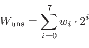

Wstecz: 4.1 Wstęp W górę: 4. Podstawowe typy danych Dalej: 4.3 Typy zmiennopozycyjne
Wymieńmy standardowe typy całkowite w C/C++. W nawiasach podane są typowe długości danych poszczególnych typów w bajtach. Typowe, bo standard (w odróżnieniu od standardu Javy) określa tylko minimalne długości oraz to, że długości wymienionych poniżej typów muszą tworzyć ciąg niemalejący. Tak więc typy całkowite to: char (1), short (2), int (4) long (4 lub 8), i long long (8). Typ short można też zapisywać jako short int, long jako long int, a long long jako long long int. Nowy standard definiuje również trzy typy znakowe: wchar_t (4), char16_t (2), i char32_t (4); są one traktowane jako oddzielne (bezznakowe) typy przeznaczone do reprezentowania znaków Unicode.
Wszystkie te typy (z wyjątkiem trzech ostatnich typów znakowych) występują w C/C++ w dwu różnych postaciach: mogą być bez znaku (unsigned) lub ze znakiem (signed). Nazwa typu bez znaku jest taka sama jak nazwa odpowiadającego typu ze znakiem, tylko poprzedzona słowem kluczowym unsigned (np. unsigned int) — do nazw typów ze znakiem można zresztą również dodać jawnie signed, choć nie ma takiej potrzeby. Samo słowo unsigned może być użyte zamiast bardziej dosłownego unsigned int.
W przypadku typu char w różnych implementacjach bywa różnie: char może być fizycznie równoważny z signed char lub unsigned char. Tym niemniej wszystkie trzy typy są dla kompilatora różne! Jeśli „znakowość” ma dla nas znaczenie, trzeba jawnie deklarować zmienne jako signed char lub unsigned char.
Aby ułatwić internacjonalizację programów, istnieją jeszcze trzy
dodatkowe typy reprezentujące znaki. Są one zawsze
unsigned
— ich wersje
signed
nie istnieją.
Typy te to:
wchar_t
(ang. wide character – znak szeroki)
— wystarczający do reprezentowania znaków najszerszego
zestawu znaków na danej platformie
char16_t
— dwa bajty interpretowane jako kod Unicode 16;
char32_t
— cztery bajty interpretowane jako kod Unicode 32.
Powiedzmy teraz, na czym polega różnica pomiędzy typami ze znakiem i bez znaku.
W zmiennych bez znaku poszczególne bity maszynowej reprezentacji liczby interpretowane są jako zera i jedynki w normalnym zapisie dwójkowym tej liczby.
Zauważmy, że nie ma sposobu, aby zapisać wartość ujemną w zmiennej typu unsigned.
Dla zmiennych ze znakiem wyraz przy najwyższej potędze dwójki brany jest z minusem; jest to tzw. kod uzupełnień do dwóch. W naszym przykładzie jest to bit ósmy, czyli na pozycji nr 7 (zapisywany po lewej stronie; jak zwykle bowiem liczymy od zera: bit pierwszy, czyli na pozycji zerowej, zapisujemy po stronie prawej). Zatem ten sam układ bitów ma teraz interpretację

czyli w naszym przykładzie
i otrzymujemy teraz wartość ujemną.
Widzimy, że dla typu unsigned char największą wartość otrzymamy dla wi = 1 dla i = 0,…, 7 i będzie ona wynosić 255. Najmniejsza możliwa wartość to oczywiście zero.
Natomiast dla typu signed char największa możliwa wartość zmiennej odpowiada wi = 1 dla i = 0,…, 6 i w7 = 0, gdyż wtedy część dodatnia jest największa, a składnika ujemnego nie ma. Odpowiada to liczbie 127 o reprezentacji 01111111. Jeśli jest składnik ujemny, a nie ma części dodatniej, tzn. gdy wi = 0 dla i = 0,…, 6 i w7 = 1, to otrzymamy najmniejszą możliwą liczbę w tej reprezentacji. Będzie to w naszym przypadku liczba -128 o reprezentacji 10000000. Liczba -1, jak łatwo się przekonać, ma reprezentację 11111111.
Ogólnie, jeśli liczba zapisana jest na n bitach, to dla odpowiedniego typu unsigned zakresem wartości będzie [0, 2n - 1], natomiast dla typu signed będzie to [- 2n-1, 2n-1 - 1]. Zatem dla różnych długości danych całkowitych otrzymamy zakresy zamieszczone w tabeli.
Typ char (tak jak pozostałe typy znakowe) jest, co prawda, typem całkowitym, ale jest traktowany inaczej niż typy liczbowe, gdyż w zasadzie służy do reprezentowania znaków. Z tego powodu nie powinniśmy, choć jest to formalnie możliwe, używać zmiennych znakowych w operacjach arytmetycznych. Wartości liczbowe zmiennych tych typów odpowiadają zwykle (choć nie musi tak być) kodom ASCII znaków. Tylko pierwsze 128 znaków ASCII (o kodach od 0 do 127) ma określone znaczenie - interpretacja pozostałych może zależeć od platformy. Co gorsza, standard w zasadzie nie wymaga, aby implementacja w ogóle korzystała z kodowania ASCII. W szczególności oznacza to, że teoretycznie nie ma pewności, iż kolejne litery alfabetu mają kolejne kody. Zwykle tak jednak jest, gdyż większość istniejących programów opiera się na założeniu, że znaki kodowane są według standardu ASCII.
Przykłady deklaracji zmiennych różnych typów:
1. #include <iostream>
2. using namespace std;
3.
4. int main() {
5. unsigned long int ul1 = 13UL;
6. unsigned long ul2 = 0xD; // 13 szesnastkowo
7. signed short ss1 = 015; // 13 ósemkowo
8. short ss2 = 13; // 13 dziesiętnie
9. unsigned char aa1 = 65;
10. signed char aa2 = 'A'; // ASCII('A') = 65
11. int aa3 = 65;
12. int aa4 = 'A';
13. char aa5 = '\101'; // 65 ósemkowo
14. char aa6 = '\x41'; // 65 szesnastkowo
15. cout << aa1 << " " << aa2 << endl
16. << aa3 << " " << aa4 << endl
17. << aa5 << " " << aa6 << endl;
18. }
Program ten drukuje
A A
65 65
A A
Wszystkie zmienne
aa1…
aa4
mają taką
samą wartość liczbową: 65 (jest to kod ASCII dużej
litery 'A'). Podczas drukowania jednak zmienne typu
char
są traktowane jako znaki, a więc drukowany jest znak odpowiadający
kodowi ASCII 65, czyli litera 'A'; zmienne typu
int
natomiast są drukowane jako liczby, nawet jeśli były zainicjowane za
pomocą literału znakowego (jak
aa4).
Czasem zachodzi potrzeba wyspecyfikowania precyzyjnie typu literału liczbowego. Literał całkowity (np. 12345) będzie zinterpretowany jako literał typu int (czyli signed int). Jeśli chcemy wymusić zinterpretowanie go jako literału typu bezznakowego, dodajemy na końcu literę 'U' (dużą lub małą), a jeśli ma to być literał typu long, dodajemy literę 'L' lub 'LL' dla typu long long. Modyfikatory te można łączyć w dowolnej kolejności. Tak więc np. '13UL' jest literałem liczby 13 typu unsigned long (zob. zmienna ul1), a '1LL' literałem liczby 1 typu long long.
Literały liczbowe (całkowite) można też zapisywać w systemie ósemkowym (oktalnym) i szesnastkowym (heksadecymalnym). Aby literał był potraktowany jako zapis liczby w systemie ósemkowym, poprzedzamy go cyfrą 0 (zero). Tak np. 037 zostanie zinterpretowane jako literał typu int liczby o wartości dziesiętnej 3⋅8 + 7 = 31, a 015 jako 8 + 5 = 13 (zmienna ss1). Oczywiście, w literałach ósemkowych nie mogą występować cyfry większe od siódemki. W szczególności, symbol ' \0' oznacza znak o kodzie ASCII zero (który nazywany jest znakiem NUL i odgrywa ważną rolę w tak zwanych C-napisach).
Literały w układzie szesnastkowym poprzedzamy zerem i literą 'X' (dużą lub małą). A zatem 0x2D to dziesiętnie 2⋅16 + 13 = 45, a 0xD to dziesiętnie 13 (zmienna ul2). W literałach szesnastkowych jako cyfr od 10 do 15 używamy liter od A do F (dużych lub małych).
Literały znakowe można zapisywać jako pojedynczy znak ujęty w apostrofy (nie cudzysłowy!) — jak w linii definiującej aa2. Kłopot pojawia się, jeśli danego znaku nie da się wpisać z klawiatury. Można wtedy zapisać taki literał w postaci '\ooo', gdzie ooo to co najwyżej trzycyfrowa liczba w układzie ósemkowym (w tym przypadku nie musimy pisać wiodącego zera; liczba i tak będzie zinterpretowana w układzie ósemkowym). Przykładem jest definicja aa5. W linii następnej skorzystaliśmy z jeszcze innej formy zapisu znaku: '\Xhh'. Po literze 'X' (lub 'x') mogą wystąpić dwie cyfry, oznaczone tu przez 'hh', które teraz będą zinterpretowane w układzie szesnastkowym. Nie można zapisywać literałów znakowych w tej formie używając zapisu dziesiętnego: trzeba zastosować układ ósemkowy lub szesnastkowy.
Niektóre znaki mają specjalne oznaczenia:
W świetle tego, co powiedzieliśmy zrozumiałe jest, że na przykład poniższa instrukcja
cout << "\101ni\x61 Ania\n\x4Fl\141 Ola" << endl;wypisze na ekranie
Ania Ania
Ola Ola
gdyż np. kod ASCII
dużej litery A to 6510=1018=4116,
a pojawienie się '\n' w wyświetlanym
tekście powoduje przejście do nowej linii.
Jak mówiliśmy, rozmiary danych poszczególnych typów nie są przez standard ustalone (tak jak są w Javie). Czasem jednak chcielibyśmy być pewni, że deklarowana zmienna ma odpowiedni rozmiar. Na przykład, jeśli nasza zmienna ma być ze znakiem i móc przyjmować wartości większe niż 33 tysiące, to jej wymiar musi być nie mniejszy niż 4 bajty. Na platformie, na której int ma 2 bajty (co jest rzadkie, ale możliwe), nie możemy zatem użyć int, ale raczej long (który musi mieć przynajmniej 4 bajty). W takich sytuacjach można uniknąć deklarowania typu jawnie; możemy posłużyć się aliasami (żargonowo: typedef'ami), zdefiniowanymi w nagłówku cstdint, nazw istniejących typów, które mają żądany wymiar (typedef omówimy szerzej w rozdziale o typedef'ach później). Na przykład, int32_t jest aliasem (inną nazwą) całkowitego typu ze znakiem, który, na danej platformie ma rozmiar dokładnie 32 bity (4 bajty) — zazwyczaj będzie to int. Liczba w nazwie aliasu wskazuje liczbę bitów, nie bajtów. Tak więc, możemy użyć int8_t, int16_t, int32_t, int64_t jako nazwy typu ze znakiem o podanym rozmiarze. Podobnie, dodając 'u' na początku nazwy, otrzymujemy aliasy nazw typów bez znaku: uint8_t, uint16_t, uint32_t, uint64_t. Wszystkie te nazwy są określone poprzez typedef w przestrzeni nazw std, więc ich pełne nazwy to std::int32_t itd.
Nagłówek cstdint definiuje również makra preprocesora, które rozwijają się do minimalnych i maksymalnych wartości danych dla różnych typów: INT32_MIN, INT32_MAX, UINT32_MAX, ect. Nie ma makr dla minimalnych wartości typów bez znaku, bo są one zawsze 0. Ponieważ są to makra, ich nazwy nie mogą być poprzedzane przedrostkiem std::.
T.R. Werner, 28 września 2018; 23:31